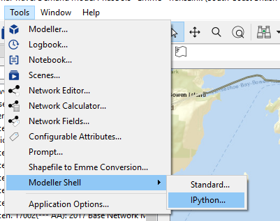
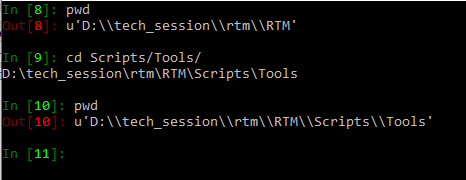
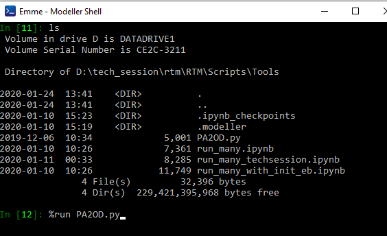
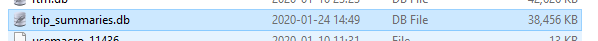
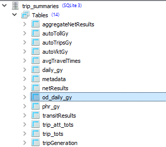
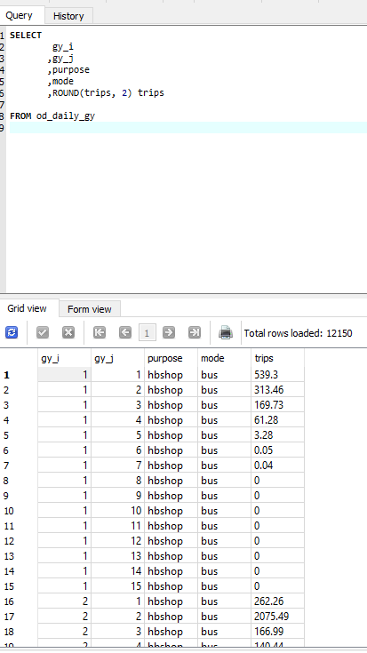

Custom Data Generation¶
Python script vs modeller tool¶
In general Modeller tools more polished and can provide a GUI, but take more time and effort to prepare. They can still be called from other places and imported into other files. We generally use these for production grade, stable solutions, that we intend to use repeatedly. Object oriented. It is expected that everyone here knows how to use a modeller tool
Python script can be built easily and often is enough to quickly complete a task at hand. Maybe fragile, can break with simple model changes. These may not be maintained. These can work will with the notebooks. They can just work with basic functions, easy to put together a basic but reproducible analysis.
Executing a python script from the EMME iPython shell¶
Open the ipython modeller shell in EMME desktop

Once in the shell, navigate to location of the subject script. In this case the script in question is located in the RTM/Scripts/Tools directory

Check the files in this directory to ensure we have the one we want, then we can use the iPython magic %run <filename.py> to execute our script

Example Tool for PA to OD¶
As a general rule in trip based modeling production/attraction (PA) trips can be converted to origin/destination (OD) trips roughly by 0.5 * (mat + mat'). However, for a variety of reasons, most notably non-home-based (NHB) trips, not everything is completely symmetrical. Production to attraction blending factors have been calculated from the trip diary for the RTM skims.
The example runs the PA2OD.py python script with the output directed to the trip_summaries.db database. Once you have run the script, navigate to RTM/<your_db_folder> and open the trip_summaries.db in your sqlite viewer.

Once there, we will see a new table named od_daily_<your ensemble if any>

From there we can query and view the results

Why does it run?¶
if __name__ == '__main__':
eb = _m.Modeller().emmebank
# run with ensemble name and ensem_agg = True to aggregate
# run with no ensemble name and ensem_agg = False to get TAZ level results
# note, TAZ level results create very large file
main(eb, ensem='gy', ensem_agg=True)
And why does this work? See this video on YouTube Name and Main
Using the notebook¶
The EMME Notebook is a powerful tool to generate results and summary data across many model runs. To demonstrate this, we took the base case model and varied the park and ride price on a particular park and ride lot. We run a separate model run for each park and ride price point. Then, we summarized the result across all of these model runs.
Connect to EMME Modeler¶
When working with Jupyter Notebook within EMME, you need to import some basic libraries and toolboxes first, then connect to EMME desktop and databank.
import inro.modeller as _m
import inro.emme.desktop as _d
import csv
import os
import multiprocessing
import numpy as np
import pandas as pd
import sqlite3
import traceback as _traceback
import shutil
# connect to EMME
dt = _m.Modeller().desktop
de = dt.data_explorer()
db = de.active_database()
ebs = de.databases()
# load toolbox
util = _m.Modeller().tool("translink.util")
Listing databanks¶
Within the Notebook scripting environment, you have access to all of the databank that is loaded in your project, you can list them all to verify.
# make sure modeller is closed or it will print to the python console in there
counter = 0
for eb in ebs:
print counter, eb.title()
counter += 1
0 Minimal Base Databank
1 pnr_bp_2016_250
2 pnr_bp_2016_300
Build functions¶
To retrieve results from multiple runs, you should build a function to systematically get the results. In our example, we will get the lot usage at all park and ride lot, and export the results to csv.
def get_all_pnr_usage(eb):
scenario_tag = str(util.get_eb_path(eb).split('\\')[-1].split('_')[-1])
df = util.get_pd_ij_df(eb)
df['price'] = scenario_tag
df['pnr_usage'] = (util.get_matrix_numpy(eb, "mf3000").flatten() +
util.get_matrix_numpy(eb, "mf3001").flatten() +
util.get_matrix_numpy(eb, "mf3002").flatten()) / 2
df = df[(df['j'] >99) & (df['j'] < 999)]
return (df)
# initialize dataframe, ij from any eb
all_pnr_usage = pd.DataFrame()
# loop to get result
for eb in ebs:
title = eb.title()
if title == 'Minimal Base Databank':
continue
eb.open()
eb = _m.Modeller().emmebank
if all_pnr_usage.empty:
all_pnr_usage = get_all_pnr_usage(eb)
else:
all_pnr_usage = pd.concat([all_pnr_usage, get_all_pnr_usage(eb)], axis=0)
all_pnr_usage_summary = all_pnr_usage.groupby(
['price', 'j']).sum()[['pnr_usage']].reset_index().pivot_table(
values='pnr_usage', index='j', columns='price').fillna(0)
# export result for all pnr lot usage
import datetime
all_pnr_usage_summary.to_csv(
'Bridgeport_pnr_all_lot_usage_result_' +
datetime.datetime.today().strftime('%Y-%m-%d') + '.csv',
index=True)
Here is a snippet of the output data:
| j | 300 | 350 | ... |
|---|---|---|---|
| 101 | 0 | 0 | ... |
| 102 | 235.7 | 235.2 | ... |
| 103 | 2.6 | 2.6 | ... |
| 104 | 341.4 | 342.4 | ... |
| 105 | 0 | 0 | ... |
| ... | ... | ... | ... |